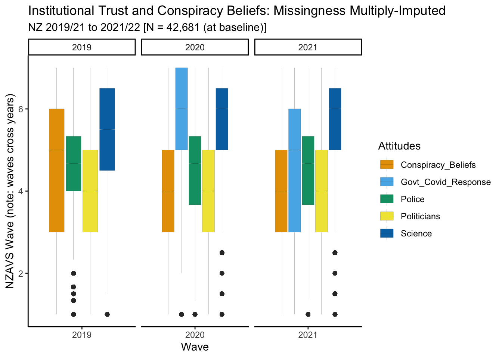

“Our society places too much emphasis on science.”(reverse coded)
We average these scores to form a single score (Hartman et al. 2017). These items were introduced in NZAVS Wave 11 (2019 - 2020).
Previous research using a propensity score design reported on changes in Trust in Science during the first three weeks of New Zealand’s COVID lockdown in March and April 2020 (Sibley et al. 2020).
Figure 1: Boxplot for Institutional Trust: NZAVS Waves During Covid: Years 2020
This table and graph compare the trust in science, police, and politicians across three different periods: pre-Covid, lockdown, and post-lockdown.
We observe:
Trust in science increased during the lockdown period and remained higher in the post-lockdown period compared to the pre-Covid period.
Trust in police remained relatively stable across all three periods, although the trend tracked downward after lockdown.
Trust in politicians increased during the lockdown period. It decreased slightly in the post-lockdown period but remained higher than in the pre-Covid period.
Conspiracy Beliefs: the average mistrust of official versions of major world events given by authorities appear to decrease during lockdown but subsequently decrease.
Notably, the central tendency may not always be the interesting statistic for understanding social change. There may be greater separation in response that is masked by overall average response. In future work, we will examine this point. For now, the trends suggest overall stability during 2019-2020, with increasing confidence in science.
NZAVS sample responses: years 2019-2022
Next, we examine changes in institutional trust across two waves following the 2019/2020 NZAVS wave.
Table:
Show the code
#|echo: false#|warning: false# this code creates a table# functions to make tables simplemy.render.cont <-function(x) {with(stats.apply.rounding(stats.default(x), digits=3), c("","Mean (SD)"=sprintf("%s (± %s)", MEAN, SD)))}my.render.cat <-function(x) {c("", sapply(stats.default(x), function(y) with(y,sprintf("%d (%0.0f %%)", FREQ, PCT))))}# now the years tab_trust <- table1::table1(~ Trust_in_Science + Trust_in_Politicians + Trust_in_Police +# not measured in 2019-20 Trust_in_Govt_Covid_Response + Conspiracy_Beliefs| Wave,data = dt,overall =FALSE,render.continuous = my.render.cont,render.categorical = my.render.cat)# needed for markdown tablestab_trust <-data.frame( tab_trust )tab_trust <- tab_trust |>rename("Forms of Institutional Trust"= X.)# graphtab_trust |>kbl(format ="markdown", booktabs =TRUE)
Forms of Institutional Trust
X2019
X2020
X2021
(N=42681)
(N=42681)
(N=42681)
Trust_in_Science
Mean (SD)
5.43 (± 1.28)
5.67 (± 1.24)
5.70 (± 1.26)
Missing
375 (0.9%)
9475 (22.2%)
14231 (33.3%)
Trust_in_Politicians
Mean (SD)
3.76 (± 1.45)
4.05 (± 1.49)
3.92 (± 1.56)
Missing
853 (2.0%)
10078 (23.6%)
15406 (36.1%)
Trust_in_Police
Mean (SD)
4.58 (± 1.26)
4.53 (± 1.26)
4.43 (± 1.30)
Missing
15 (0.0%)
9378 (22.0%)
13770 (32.3%)
Trust_in_Govt_Covid_Response
Mean (SD)
NA (± NA)
5.66 (± 1.55)
4.79 (± 1.94)
Missing
42681 (100%)
9620 (22.5%)
15123 (35.4%)
Conspiracy_Beliefs
Mean (SD)
4.36 (± 1.63)
4.10 (± 1.68)
4.02 (± 1.74)
Missing
1197 (2.8%)
9676 (22.7%)
15110 (35.4%)
Here is a graph of the same.
Show the code
# transform data into long formatedt_temp <- dt |>select( Wave, Trust_in_Science, Trust_in_Politicians, Trust_in_Police, Trust_in_Govt_Covid_Response, Conspiracy_Beliefs)# boxplot dataframedt_long <-pivot_longer( dt_temp,cols =-c("Wave"),names_prefix ="Trust_in_",values_to ="Values",names_to ="Attitudes") |>drop_na()# make graphplot_tab <- dt_long |> ggplot2::ggplot(aes(Wave, Values, fill = Attitudes)) +labs(title ="Institutional Trust and Conspiracy Beliefs",subtitle ="NZ 2019/21 to 2021/22 [N = 42,681 (at baseline)]") +geom_boxplot(size = .05, notch = T) +scale_fill_okabe_ito() +facet_grid (. ~ Wave, scales ="free_x", space ="free_x") +theme(legend.position ="none") +labs(y ="NZAVS Wave (note: waves cross years)") +theme_classic()plot_tab
Trust in Science: The average trust score increased from 5.43 (±1.28) in 2019 to 5.67 (±1.24) in 2020 and to 5.70 (±1.26) in 2021. The number of missing values increased from 375 (0.9%) in 2019 to 9,475 (22.2%) in 2020 and further to 14,231 (33.3%) in 2021.
Trust in Politicians: The average trust score increased from 3.76 (±1.45) in 2019 to 4.05 (±1.49) in 2020, then slightly decreased to 3.92 (±1.56) in 2021. The number of missing values increased from 853 (2.0%) in 2019 to 10,078 (23.6%) in 2020 and further to 15,406 (36.1%) in 2021.
Trust in Police: The average trust score decreased from 4.58 (±1.26) in 2019 to 4.53 (±1.26) in 2020 and further to 4.43 (±1.30) in 2021. The number of missing values increased from 15 (0.0%) in 2019 to 9,378 (22.0%) in 2020 and further to 13,770 (32.3%) in 2021.
Trust in Government’s COVID Response: This metric was not applicable in 2019. The average trust score was 5.66 (±1.55) in 2020 and decreased to 4.79 (±1.94) in 2021. The number of missing values was 42,681 (100%) in 2019, 9,620 (22.5%) in 2020, and 15,123 (35.4%) in 2021.
Conspiracy Beliefs: The average score decreased from 4.36 (±1.63) in 2019 to 4.10 (±1.68) in 2020 and further to 4.02 (±1.74) in 2021. The number of missing values increased from 1,197 (2.8%) in 2019 to 9,676 (22.7%) in 2020 and further to 15,110 (35.4%) in 2021.
How should we in interpret these findings? Missing data from non-response and panel attrition may bias estimates for the population. We must address bias from missing responses. We address this bias through multiple imputation.
Handling missingness
To handle missing data, we must model and predict missing responses. We attempt two types of missing data imputation. Both use machine learning. The first is the mlim package in R, which uses model tuning to optimise the prediction of missing values. The second is the mice package in R. It uses predictive mean matching (ppm) optimse the prediction of missing values. We find that the mice package/ppm performs better, and present theppm results here. We present the code for both approaches below.
Show the code
mc_vv <-readRDS(here::here(push_mods, "mc_vv"))# transform data into long format for graph and tabledt_temp_mice <- mc_vv |>select( Wave, Trust_in_Science, Trust_in_Politicians, Trust_in_Police, Trust_in_Govt_Covid_Response, Conspiracy_Beliefs)# boxplot dataframedt_long_mice <-pivot_longer( dt_temp_mice,cols =-c("Wave"),names_prefix ="Trust_in_",values_to ="Values",names_to ="Attitudes") |>drop_na()library(ggokabeito)plot_tab_mice <- dt_long_mice |> ggplot2::ggplot(aes(Wave, Values, fill = Attitudes)) +labs(title ="Institutional Trust and Conspiracy Beliefs: Missingness Multiply-Imputed",subtitle ="NZ 2019/21 to 2021/22 [N = 42,681 (at baseline)]") +geom_boxplot(size = .05, notch = T) +scale_fill_okabe_ito() +facet_grid (. ~ Wave, scales ="free_x", space ="free_x") +theme(legend.position ="none") +labs(y ="NZAVS Wave (note: waves cross years)") +theme_classic()plot_tab_mice

Show the code
mc_vv <-readRDS(here::here(push_mods, "mc_vv"))# now the years tab_trust_mice <- table1::table1(~ Trust_in_Science + Trust_in_Politicians + Trust_in_Police +# not measured in 2019-20 Trust_in_Govt_Covid_Response + Conspiracy_Beliefs| Wave,data = mc_vv,overall =FALSE,render.continuous = my.render.cont,render.categorical = my.render.cat)# must be a data frametab_trust_mice <-data.frame(tab_trust_mice)tab_trust_mice <- tab_trust_mice |> dplyr::rename("Forms of Institutional Trust"= X.)# graphtab_trust_mice |>kbl(format ="markdown", booktabs =TRUE)
Forms of Institutional Trust
X2019
X2020
X2021
(N=469491)
(N=469491)
(N=469491)
Trust_in_Science
Mean (SD)
5.43 (± 1.28)
5.64 (± 1.25)
5.65 (± 1.28)
Missing
375 (0.1%)
9475 (2.0%)
14231 (3.0%)
Trust_in_Politicians
Mean (SD)
3.76 (± 1.45)
4.02 (± 1.50)
3.85 (± 1.57)
Missing
853 (0.2%)
10078 (2.1%)
15406 (3.3%)
Trust_in_Police
Mean (SD)
4.58 (± 1.26)
4.50 (± 1.27)
4.37 (± 1.32)
Missing
15 (0.0%)
9378 (2.0%)
13770 (2.9%)
Trust_in_Govt_Covid_Response
Mean (SD)
NA (± NA)
5.64 (± 1.56)
4.74 (± 1.96)
Missing
469491 (100%)
9620 (2.0%)
15123 (3.2%)
Conspiracy_Beliefs
Mean (SD)
4.36 (± 1.63)
4.13 (± 1.68)
4.06 (± 1.75)
Missing
1197 (0.3%)
9676 (2.1%)
15110 (3.2%)
The data consist of ten imputed datasets plus the original data with missing values. We will need to adjust for the uncertainities of multiple imputation using Rubin’s rule.
Additionally, we are now grouping pre and post responses together in the 2019 wave. So we are no longer identifying specific responses of to the COVID pandemic and response. To identify the specific effects of the COVID pandemic and response requires care. There are no contrasts from which to derive comparisons. That is, because all in the population were subject to the exposure, we cannot straightforwardly infer how people would have responded were they not exposed. We will return to this issue in future work.
These provisos aside, we find evidence for continued average confidence in science, with some evidence for a continued downward shift in trust for the NZ police.
Next, we formally model change over time using generalised estimating equations (GEE), taking into account uncertainties from multiple imputation. We employ survey weights to recover population estimates.
Results for average responses.
Trust in science
Show the code
# read output for tablepooled_m_trust_in_science <-readRDS( here::here(push_mods, "pooled_m_trust_in_science"))summary( pooled_m_trust_in_science ) |>as.data.frame()|>kbl(format ="markdown", digits =3, caption ="Trust in Science by NZAVS Wave")
Trust in Science by NZAVS Wave
term
estimate
std.error
statistic
df
p.value
(Intercept)
5.451
0.007
756.404
62762.541
0
Wave2020
0.192
0.006
29.781
176.552
0
Wave2021
0.215
0.007
29.572
146.591
0
Show the code
# read output for tablepooled_m_trust_in_politicians <-readRDS( here::here(push_mods, "pooled_m_trust_in_politicians"))summary( pooled_m_trust_in_politicians ) |>as.data.frame()|>kbl(format ="markdown", digits =3, caption ="Trust in Politicians by NZAVS Wave")
Trust in Politicians by NZAVS Wave
term
estimate
std.error
statistic
df
p.value
(Intercept)
3.736
0.008
441.327
14871.025
0
Wave2020
0.251
0.009
28.251
93.102
0
Wave2021
0.080
0.009
8.803
259.975
0
Show the code
# read output for tablepooled_m_trust_in_police <-readRDS( here::here(push_mods, "pooled_m_trust_in_police"))summary( pooled_m_trust_in_police ) |>as.data.frame()|>kbl(format ="markdown", digits =3, caption ="Trust in Police by NZAVS Wave")
Trust in Police by NZAVS Wave
term
estimate
std.error
statistic
df
p.value
(Intercept)
4.539
0.008
574.900
103491.441
0
Wave2020
-0.110
0.007
-16.752
111.240
0
Wave2021
-0.247
0.008
-31.849
133.079
0
Show the code
# read output for tablepooled_m_trust_in_gov_covid <-readRDS( here::here(push_mods, "pooled_m_trust_in_gov_covid"))summary( pooled_m_trust_in_gov_covid ) |>as.data.frame()|>kbl(format ="markdown", digits =3, caption ="Trust in Covid Governemnt Response by NZAVS Wave")
Trust in Science by NZAVS Wave
term
estimate
std.error
statistic
df
p.value
(Intercept)
5.614
0.011
523.237
103.496
0
Wave2021
-0.903
0.011
-81.429
67.518
0
Show the code
# read output for tablepooled_m_conspiracy_beliefs <-readRDS( here::here(push_mods, "pooled_m_conspiracy_beliefs"))summary(pooled_m_conspiracy_beliefs) |>as.data.frame()|>kbl(format ="markdown", digits =3, caption ="Conspiracy Beliefs by NZAVS Wave")
Conspiracy Beliefs by NZAVS Wave
term
estimate
std.error
statistic
df
p.value
(Intercept)
4.362
0.009
464.975
4101.840
0
Wave2020
-0.251
0.012
-20.768
49.163
0
Wave2021
-0.308
0.013
-23.368
48.228
0
The results reflect findings in the descriptiove tables.
Trust in Science by NZAVS Wave:
From 2019 to 2020, trust in science reliably increased (estimate = 0.192, p < 0.001).
From 2019 to 2021, trust in science also reliably increased (estimate = 0.215, p < 0.001).
There is no evidence for a downward trend in average Trust in Science as of 2021.
Trust in Politicians by NZAVS Wave:
From 2019 to 2020, the increase in trust in politicians was reliable (estimate = 0.251, p < 0.001).
From 2019 to 2021, the increase in trust in politicians was also reliable (estimate = 0.080, p < 0.001).
Comparisons here are with the baseline wave, comparing 2019 and 2021 we find evidence for regression to the baseline wave. Whereas trust in politicians increased during the initial COVID-19 attack and response, gains to average trust appear to have been dropping.
Trust in Police by NZAVS Wave:
From 2019 to 2020, the decrease in trust in police was reliable (estimate = -0.110, p < 0.001).
From 2019 to 2021, the decrease in trust in police was also reliable (estimate = -0.247, p < 0.001).
Here we find evidence for declining Trust in the NZ police. Notably, however, overall levels of Trust in the NZ police remain high.
Trust in Government COVID Response by NZAVS Wave (only two waves):
From 2019 to 2021, the decrease in trust in the NZ government’s COVID response was reliable (estimate = -0.903, p < 0.001). This represents a major drop in confidence. Notably, this drop in confidence for the NZ government’s COVID response has not considerably affected attitudes to science.
Conspiracy Beliefs:
From 2019 to 2020, the decrease in conspiracy beliefs was reliable (estimate = -0.251, p < 0.001).
From 2019 to 2021, the decrease in conspiracy beliefs was also reliable (estimate = -0.308, p < 0.001).
On average, we find that conspiracy beliefs are falling. However, this evidence is based on the assumptions that the model we have used impute missing conspiracy beliefs is adequate. It is possible that real change in conspiracy beliefs, and indeed for all imputed variables differs from what we have recovered in the imputation model.
Summary
The results suggest a reliable increase in trust in science from 2019 to 2020, and that this shift has remained constant. In contrast, changes in trust in politicians, trust in police, trust in the government’s COVID response, across the waves were generally unreliable. Evidence suggests that average conspiracy beliefs may have declined.
The preliminary findings merit further research.
Firstly, multiple imputation models rely on assumptions. These assumptions must be tested.
Secondly, when a population becomes more polarised, the average response may be misleading, potentially indicating no change. We must investigate change at the margins of reponse, not merely at the average response.
Thirdly, we need not assume that the items model a univariate latent construct. We might instead model items from the scales individually, as suggested by VanderWeele (2022).
Fourth, we cannot know how trust in science would have changed had there been no Pandemic because there is no contrast condition.
In the near future, that address these challenges. Stay tuned!
Information about the New Zealand Attitudes and Values Study.
For more information about the NZAVS see: here and here
References
Hartman, Robert O., Nathan F. Dieckmann, Amber M. Sprenger, Bradley J. Stastny, and Kenneth G. DeMarree. 2017. “Modeling Attitudes Toward Science: Development and Validation of the Credibility of Science Scale.”Basic and Applied Social Psychology 39: 358–71. https://doi.org/10.1080/01973533.2017.1372284.
Lantian, Anthony, Dominique Muller, Cécile Nurra, and Karen M Douglas. 2016. “Measuring Belief in Conspiracy Theories: Validation of a French and English Single-Item Scale.”International Review of Social Psychology 29 (1): 114.
Marques, Mathew D, Chris G Sibley, Marc Wilson, Joseph A Bulbulia, Danny Osborne, Kumar Yogeeswaran, Carol Lee, Isabelle M Duck, Karen Douglas, and Aleksandra Cichocka. 2022. “Psychological Predictors of COVID-19 Vaccination in New Zealand.”
Nisbet, Erik C., Kathryn E. Cooper, and R. Kelly Garrett. 2015. “The Partisan Brain: How Dissonant Science Messages Lead Conservatives and Liberals to (Dis)trust Science.”The ANNALS of the American Academy of Political and Social Science 658 (1): 36–66. https://doi.org/10.1177/0002716214555474.
Sibley, Chris G, Lara Greaves, Nicole Satherley, Petar Milojev, Joseph Bulbulia, Fiona Barlow, Danny Osborne, et al. 2020. “What Happened to People in New Zealand During Covid-19 Home Lockdown? Institutional Trust, Attitudes to Government, Mental Health and Subjective Wellbeing.”osf.io/e765a.
Tyler, Tom R. 2005. “Policing in Black and White: Ethnic Group Differences in Trust and Confidence in the Police.”Police Quarterly 8 (3): 322342.
VanderWeele, Tyler J. 2022. “Constructed Measures and Causal Inference: Towards a New Model of Measurement for Psychosocial Constructs.”Epidemiology 33 (1): 141. https://doi.org/10.1097/EDE.0000000000001434.
![]()